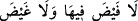

kupaların özellikle Allah’ın yaratmasıyla meydana geldiğine işâret etmektedir” derler.
Bu îzâha göre, cennetteki kap kacaklar, bizâtihi Allah Teâlâ’nın kudretinin eseri olmak
hasebiyle şereflendirilmiş olmaktadırlar. Buna göre ikinci kez gelen “kavârîr” kelimesi,
birinciden bedel ve açıklamak üzere gelmiş olur. Buna göre âyetin mânâsı; “gümüşten
yaratılmış öyle billurlar ki onların ölçüsünü kendileri takdir ederler.”
Âyetteki “kadderûhâ takdîran” cümlesi, kendisinden önce geçen “kavârîr” kelimesinin
sıfatıdır. Bu cümlede bahsedilen “billur kupaların, aralarında dolaştırılan ve o
kupalardan içen kimselerce takdir edilmesi” ifâdesi şu anlama gelir: Onlar, bu kupaları
önce kendi gönüllerince bir ölçü ve şekil altında tesbit ederler. Sonra bunların
isteklerine uygun şekil ve mikdarlarda gelmesini isterler. Sonra da bu tespit ve
isteklerine uygun olarak o kupalar kendilerine gelir.
Herhangi bir kaptan bir şey içecek olan insanın isteyebileceği en önemli şey, bunun
“berraklık, saflık ve temizliği”dir. Allah Teâlâ işte bu özellikleri “billurdan” ve
“gümüşten” kelimeleri ile ifâde etmiştir. İçilecek su kabında aranan bir diğer özellik ise
şekil ve mikdardır. Bu özelliği de Allah “onları kendileri takdir ederler” ifâdesi ile
belirtmiştir.
“Onları kendileri takdir ederler” ifâdesini bâzı âlimlere göre; “onları kendi iyi
amelleri ile takdir ederler; onlar da bu takdire göre gelir” şeklinde anlamak da
mümkündür.
Bâzı âlimlere göre “takdir ederler” fiilinin fâili, -yukarda işâret ettiğimiz gibi-
“ebrâr” değil, onların arasında bu billur kadehleri dolaştıran hizmetçilerdir. Fâilin bu
olabileceğine, on beşinci âyette yer alan “/onların etrafında dolaştırılır”
ifâdesi delâlet etmektedir. Buna göre âyet-i kerîmenin mânâsı; “Hizmet etmek üzere
dolaşanlar bu kupaların içindeki içecekleri -ne az ne çok, tamtamına- cennetliklerin
susuzluklarını giderecek ve onları suya kandıracak mikdarda takdir ederler” demek olur.
Böyle bir içecek, onu içen kimse için en lezzetli bir içecektir. Çünkü tam da onun
ihtiyaç duyduğu mikdardadır. Zâten “itidâl”in iki ucu yâni hem ifrat ve hem de tefrit
kınanmıştır. Nitekim Mücâhid bu âyeti; “/ne az ne de çok” şeklinde
tefsir etmiştir. Dahhak’ın tefsirine göre ise; bu kupaların alacak olduğu içecek, onları
dolaştıran hizmetçilerin avuçlarının mikdarı kadardır.
17. Onlara orada bir kâseden içirilir ki (bu şarabın) karışımında zencefil vardır.
“Onlara orada” cennette “bir kâseden” şaraptan “içirilir ki karışımında zencefil
vardır.” Bu içeceği ya Allah ya da Allah’ın emriyle orada hizmet eden hizmetçiler
içirir. Bu ifâde ile cennetliklere daha fazla bir ta’zim katılmaktadır. Çünkü -faraza- “